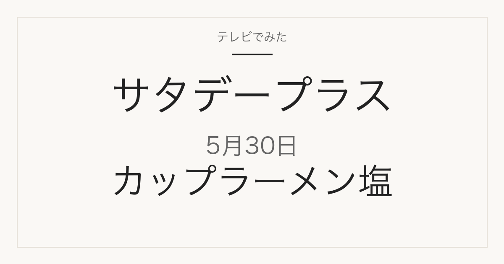

1位／番組掲載価格 339円
日清食品
日清ラ王とろまろ塩

メーカー商品で、スーパーや通販で扱われます。112g×2個セットでの販売で、番組掲載価格（1個あたりと推定）とは販売単位が違います
テレビ紹介商品の記録メディア
2026年5月30日（土）放送
「ひたすら試してランキング」で調査された5品

2026年5月30日放送のサタデープラス「ひたすら試してランキング」カップラーメン塩の1位は、日清食品「日清ラ王とろまろ塩」（番組掲載価格339円）です。全5品の番組掲載価格は138円から339円です。このうち5品は楽天市場で販売ページを確認できました（販売単位が番組掲載と異なる場合があります）。
この記事には広告・アフィリエイトリンクが含まれます。順位・商品名・番組掲載価格は番組公式情報で確認しています。価格は2026年5月30日時点の番組調べで、現在の販売価格・在庫・送料は販売先で確認してください。容量・入数は商品名から読み取れる範囲で記載し、確認できないものは「未確認」としています。
番組の順位は番組独自の調査によるもので、当サイトの評価ではありません。コストパフォーマンスが項目に含まれるため、上位が最安とは限りません。
| 順位 | 商品名 | メーカー | 番組掲載価格 | 容量・入数 | 購入先 |
|---|---|---|---|---|---|
| 1位 | 日清ラ王とろまろ塩 | 日清食品 | 339円 | 未確認 | 楽天市場（販売ページを確認） |
| 2位 | ホットヌードル NEO はま塩 | 東洋水産 | 138円 | 未確認 | 楽天市場（販売ページを確認） |
| 3位 | 日清麺職人 柚子しお | 日清食品 | 198円 | 未確認 | 楽天市場（販売ページを確認） |
| 4位 | 東北の味 岩手磯ラーメン | 寿がきや食品 | 241円 | 未確認 | 楽天市場（販売ページを確認） |
| 5位 | 麺づくり 鶏だし塩 | 東洋水産 | 254円 | 未確認 | 楽天市場（販売ページを確認） |
1位／番組掲載価格 339円
日清食品
メーカー商品で、スーパーや通販で扱われます。112g×2個セットでの販売で、番組掲載価格（1個あたりと推定）とは販売単位が違います
2位／番組掲載価格 138円
東洋水産

メーカー商品で、スーパーや通販で扱われます。70g×12個のケース販売で、番組掲載価格（1個あたりと推定）とは販売単位が違います
3位／番組掲載価格 198円
日清食品

メーカー商品で、スーパーや通販で扱われます。76g×12食のケース販売で、番組掲載価格（1個あたりと推定）とは販売単位が違います
4位／番組掲載価格 241円
寿がきや食品

メーカー商品で、スーパーや通販で扱われます。104g×12個のケース販売で、番組掲載価格（1個あたりと推定）とは販売単位が違います
5位／番組掲載価格 254円
東洋水産

メーカー商品で、スーパーや通販で扱われます。87g×12個のケース販売で、番組掲載価格（1個あたりと推定）とは販売単位が違います
MBS「サタプラ」ひたすら試してランキング カップラーメン塩（2026年5月30日放送）
順位・商品名・番組掲載価格は2026年5月30日時点の番組公式ページによります。MBS公式サイトは直近の放送回のみ公開しているため、この回の公式ページは現在閲覧できません。上のリンクはインターネットアーカイブに保存された公式ページのコピーです。価格は放送時点の番組調べで、現在の販売価格・在庫・送料は販売先で確認してください。
公開：2026年9月9日／最終更新：2026年9月9日